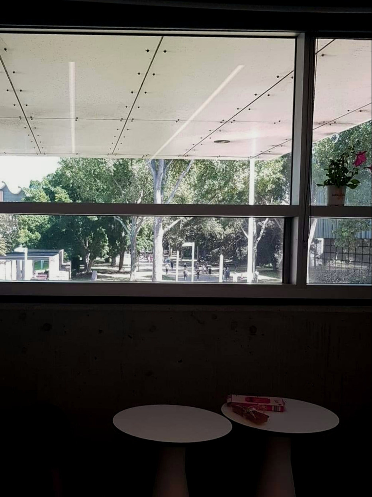

PhD Announcement
14 April 2019
I very recently started a PhD at UNSW’s City Futures Research Centre. This is a fact often met with thinly veiled scepticism from my industry colleagues. This scepticism is understandable. The gap between academic and professional urban planning is large and a PhD seems to do little to add to career prospects when compared to someone who has used that time to get a few solid years of professional project management under their belt. I therefore feel a need to explain myself.
The heart of the matter is that digital technology is set to change the planning profession. With a background in both planning and computing I see few planning tasks that could not eventually be either automated entirely or significantly assisted using the computing technology available right now. Alongside this there are many new opportunities for planners to understand their cities and communities better than ever before. Pure technological feasibility doesn’t mean it is easy though with several system design barriers to be overcome (preferably with human-centred solutions) before the potential of digital technology can be fully realised.
The PhD allows me space to step outside the walls of professional practice, which whether public or private, can be limited by political cycles and stress of short-term project deadlines. It is an opportunity to be optimistic, think big and work on developing open source tools (… and hopefully learn enough to keep ahead of the robots). My project will specifically be focused on policy monitoring and how technology can be used to create a more responsive planning system. Alongside technical feasibility the project will address issues of transparency in data-driven decision making for public policy and regulatory decisions.
During this process I aim to be as useful as possible in bridging the traditional gap between academia and practice. I am looking forward to sharing as much as I can through more frequent blog updates, website improvements, contributions to various online forums and attendance at conferences. I am fortunate to have generous additional annual funds as part of my scholarship with which I will be able to travel and meet with international colleagues to see various PlanTech development initiatives in action. Most importantly though I am looking forward to working with industry groups, such as the Planning Institute of Australia, to build local networks and expertise within the Australian profession to give us the best chance to achieve better outcomes for our cities and the communities that live in them.

Big ambitions at the beggining of a long and daunting project. Whatever happens at least I have a desk with a view.
 @ClaireCities
@ClaireCities